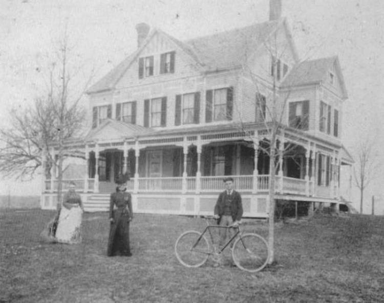

Huldah
Elizabeth Hatch
10 Nov 1849 - 17 Oct 1930
Bessie
Minerva Cable
Jul 1875 - 1957
Frederick Alfred Cable
3 Apr 1877 - 26 May 1929 
Glover Wheeler Cable House, Chestnut
Tree Hill Road, Oxford.
On the left, is Huldah
Elizabeth Hatch Cable.
The woman standing in the center is Bessie Cable, wife of Sherman
Sanford.
The gentleman at right with the vintage bicycle is Fred Cable.